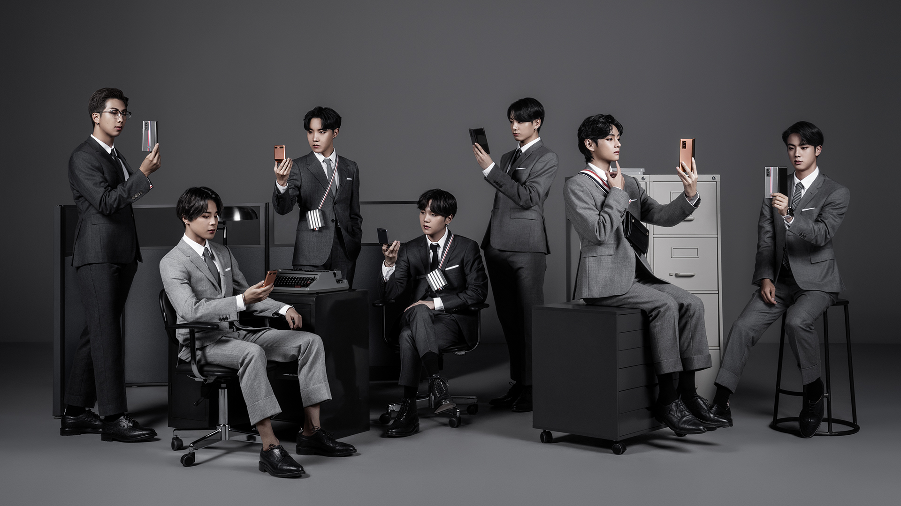
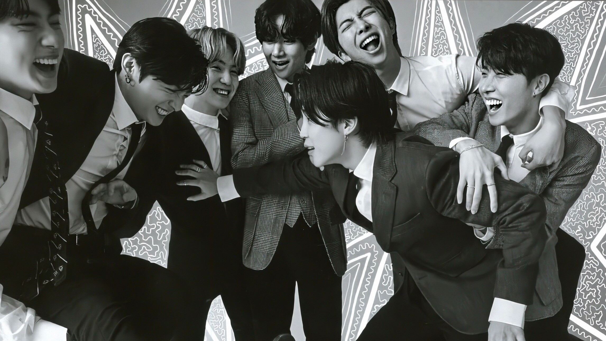

A seven member South Korean boy group under BigHit Entertainment
that debuted June 13, 2013 on MCOUNTDOWN with the song “No More
Dream” followed by “We Are Bulletproof Pt. 2".

BTS Are Unstoppable: Their Biggest Achievements in 2020
We’re only halfway through 2020, but for BTS, every day is a day
to break another record. From album sales to chart topping hits,
the group’s achievements know no bounds. With a roster of
boundary breaking pop hits and the support of their ARMY, their
success is guaranteed.

No. 1 on the Billboard 200
Their studio album, “Map of the Soul: 7”, debuted at No. 1 on
the Billboard 200, making it their 4th consecutive album to do
so and them the only Korean act to achieve this feat..
No. 1 in iTunes history
In a clean sweep, BTS have officially become the group with the
most No. 1s in iTunes history. Their song ‘Black Swan’ has
reached No. 1 in 104 countries, and counting.
No. 1 on the iTunes charts
BTS are the only group in history in which every member has
achieved a solo No. 1 on the iTunes charts.
Stay Gold
BTS’ single ‘Stay Gold’ scored No. 1 on the Billboard Digital
Songs Sales Chart, earning them their 20th #1 on the chart,
making them the artists with the most #1s in chart history.
BTS wears the crown for the biggest Spotify debut
Their song ‘Your Eyes Tell’ earned 876,000 streams within the
first few hours of release, with no tracking or playlisting.
BEST SELLING ALBUM
Their album “Map of the Soul: 7” has sold over 4 million units
and counting, beating out The Weeknd’s “After Hours”.
Solo artist with the most No. 1s in iTunes history
BTS’ V has officially become the solo artist with the most No.
1s in iTunes history, setting a new record for the group, while
also surpassing his own group’s feat.
BTS have broken a 36 year long record
by Michael Jackson. With “Map of the Soul: 7”, they became the
only international artists to top the Japanese Oricon Music
Chart.
Unbeatable Presence
Their unbeatable presence on social media only continues to
extend. They currently hold the Billboard Top Social artist for
a record 186 weeks, equivalent to three years.
Most Billboard Hot 100 entries
With their single ‘ON’ debuting in the Billboard Hot 100, they
have officially become the Korean act with the most Billboard
Hot 100 entries.
“BTS, an acronym of Bangtan Sonyeondan or “Beyond the Scene”, is a
South Korean boyband that has been capturing the hearts of millions of
fans globally since their debut in June 2013. The members of BTS are
RM, Jin, SUGA, j-hope, Jimin, V and Jung Kook. Gaining recognition
from their authentic, self-produced music and top-notch performances
to the way they interact with their fans, the band has established
themselves as global superstars breaking countless world records.
While imparting a positive influence through activities such as the
LOVE MYSELF campaign and the UN ‘Speak Yourself’ speech, BTS has
mobilized millions of fans across the world (named ARMY), topped
prominent music charts, sold out worldwide tours including stadiums
and has been named as one of TIME 100: The Most Influential People of
2019. The band has also been recognized with numerous prestigious
awards like the Billboard Music Awards and American Music Awards.”
Sept. 21, 2020 | Stephen Thompson -- We've been trying to make a BTS
Tiny Desk concert happen for years now — even gaming out ways we might
move Bob Boilen's desk far enough forward to accommodate the superstar
Korean boy band's dance moves.
In the end, it took a global pandemic — and the launch of Tiny Desk
(home) concerts back in March — to make something happen. With BTS
cooped up in Seoul, the group held true to the series's spirit by
convening a live band for its Tiny Desk debut, and even arranged to
perform in a workspace with a music-friendly backdrop: the record store
VINYL & PLASTIC by Hyundai Card in BTS's hometown.
Opening with this summer's inescapable "Dynamite" — the group's first
single to hit No. 1 in the U.S., as well as its first song to be fully
recorded in English — BTS leaned hard into the new track's celebratory,
"Uptown Funk"-adjacent vibes. From there, the group dipped into its back
catalog, seizing on the opportunity to showcase its quieter side while
(mostly) staying uncharacteristically seated. The breezily propulsive
"Save ME," from 2016, ultimately gave way to a full-on power ballad in
2017's reflective "Spring Day."
The latter track seemed especially true to BTS's hopeful nature:
Introduced with a few optimistic words from rapper and singer RM ("It's
been the roughest summer ever, but we know that spring will come"), the
song reflects on a need to wait out hard times, even as the weight of
present-day pain feels oppressive.
BTS had intended to spend 2020 delighting the BTS Army in arenas around
the world, only to spend these last few months performing in isolation.
Released on the last day of a grim season, "Spring Day" provides a nice
reminder of what awaits us on the other side. We just have to get
through fall and winter first.
BE (DELUXE EDITION)
BTS will be releasing their new album, “BE (Deluxe Edition)” on
November 20, 2020. This album is particularly special as it has direct
involvement from BTS not only in music but in concept, composition,
and design. All updates regarding comeback schedule will be here.